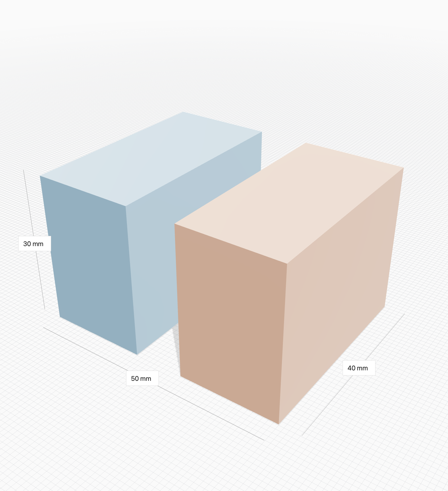

Modelle & Baugruppen
Mehrere Dateien gemeinsam öffnen. Die Baumstruktur zeigt Hauptdateien, Dateitypen und Unterkomponenten; einzelne Teile lassen sich gezielt ausblenden.
Kostenloser CAD-Viewer für macOS
Öffnen. Drehen. Verstehen. Form gibt dir einen ruhigen Blick auf Bauteile und Baugruppen – direkt auf deinem Mac.
Entwicklervorschau · macOS 14 oder neuer · Intel und Apple Silicon
Die App-Store-Fassung ist in Vorbereitung.

Kein neues Konstruktionsprojekt anlegen. Einfach die Datei öffnen, interessante Stellen prüfen und bei Bedarf in deiner gewohnten CAD- oder Drucksoftware weiterarbeiten.
Mehrere Dateien gemeinsam öffnen. Die Baumstruktur zeigt Hauptdateien, Dateitypen und Unterkomponenten; einzelne Teile lassen sich gezielt ausblenden.
Außenmaße und Abstände zwischen Oberflächenpunkten anzeigen. Dateiinformationen ergänzen das Volumen geschlossener Darstellungsgeometrie.
Eine Schnittfläche durch die Baugruppe bewegen oder Bauteile in einer Explosionsansicht auseinanderziehen.
Verschieben, drehen und an äußeren Begrenzungsflächen ausrichten. Änderungen lassen sich rückgängig machen; Originaldateien bleiben erhalten.
Quellfarben und eingebettete Texturen sehen oder Komponenten für die Prüfung unterschiedlich einfärben. Ein Referenzapfel macht die Größe anschaulich.
Die aktuelle 3D-Ansicht als PNG speichern – mit Grid und sichtbaren Maßangaben, ohne die Werkzeugleisten.
Schattiert, mit Kanten, als Drahtgitter oder transparent. Zwischen Perspektive, Orthografie und den üblichen Standardansichten wechseln.
Bei installierter Drucksoftware Material und Druckparameter für eine geometrische Zeitschätzung wählen. Die Desktop-Vorschau bietet zusätzlich eine lokale Bambu-Berechnung mit einem ausdrücklich genannten festen Profil.
Allgemeine Einstellungen von der aktuellen Szene trennen. Darstellung für die ganze Szene oder nur eine Datei einstellen und die Auswahl gezielt einpassen.
CAD trifft 3D-Druck
CAD-Geometrie wird für die Anzeige trianguliert. glTF-Dateien benötigen eingebettete Ressourcen; externe OBJ-Materialdateien und native proprietäre CAD-Formate werden in der Vorschau nicht importiert. Formate und Grenzen im Detail ↗
Grundlegende Mausprofile für Bambu Studio, Fusion 360, Blender, SOLIDWORKS und Onshape erleichtern den Wechsel. Die Systemsprache wird automatisch übernommen.
Per Dateiauswahl, Finder oder Drag-and-drop. Mehrere Modelle können in derselben Szene liegen.
Drehen, Bauteile auswählen, Maße vergleichen und interessante Details isolieren.
Eine Ansicht als Bild sichern oder die Originaldatei in passender installierter Software öffnen.
Von FDMwerk
Form ist kostenlos. Der eigene Anwendungscode steht unter der MIT-Lizenz auf GitHub. Bibliotheken und Modellressourcen behalten ihre jeweiligen Lizenzen.
Funktionsbeschreibung, Build-Anleitung, Tests, Datenschutz und Hinweise zu Fremdkomponenten liegen direkt beim Projekt. Fehlerberichte und sinnvolle Beiträge sind willkommen.
Ja. Die Vorschau hat keine In-App-Käufe, Werbung oder Benutzerkonten. Der eigene Anwendungscode ist offen verfügbar. Für die eigenständige Weitergabe gelten zusätzlich die Lizenzen der enthaltenen Fremdkomponenten.
Form verarbeitet die Modelle lokal. Es gibt keine Modell-Uploads, Analyse-Tracker oder Cloud-Konten in der App. „Öffnen mit“ übergibt eine Datei nur auf deinen ausdrücklichen Klick an eine installierte Anwendung.
Form ist ein Viewer mit Prüf- und Anordnungswerkzeugen. Es ist keine parametrische Konstruktion. Messungen beruhen auf der Darstellungsgeometrie; Schnittflächen sind offen, und das Andocken erzeugt keine dauerhaften CAD-Abhängigkeiten. Fertigungsrelevante Maße prüfst du im ursprünglichen CAD-System.
Die App-Store-Fassung ist in Vorbereitung. Die GitHub-Veröffentlichung nennt den aktuellen Status und vorhandene Testpakete. Eine Entwicklervorschau ist noch keine von Apple freigegebene oder notarisiert veröffentlichte Produktionsversion.
Das Projekt zielt auf macOS 14 oder neuer und baut für Apple Silicon und Intel. Die überprüften Systeme und noch offenen Kompatibilitätstests sind im Prüfbericht dokumentiert.
Form für macOS
Support: support@fdmwerk.de